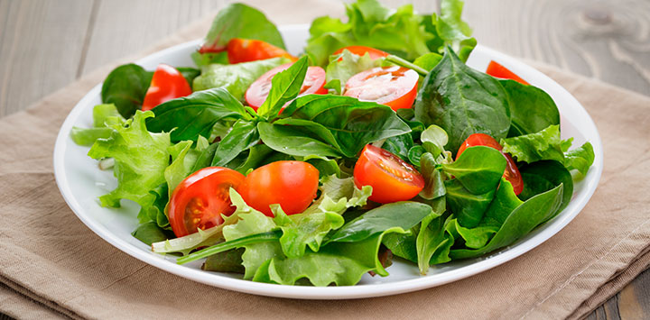
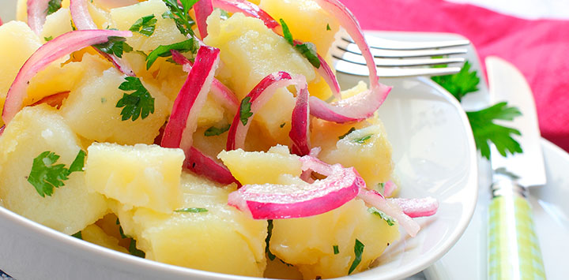
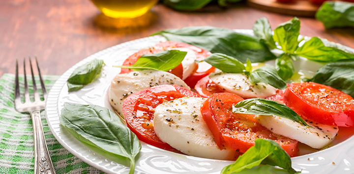
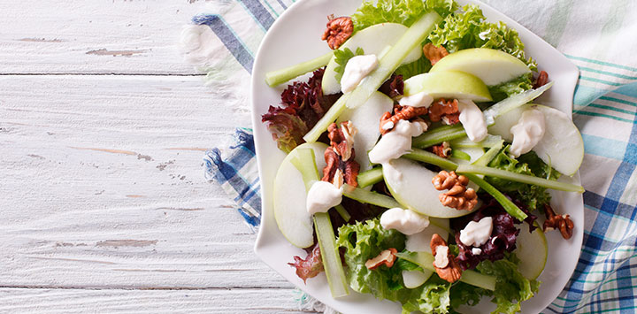
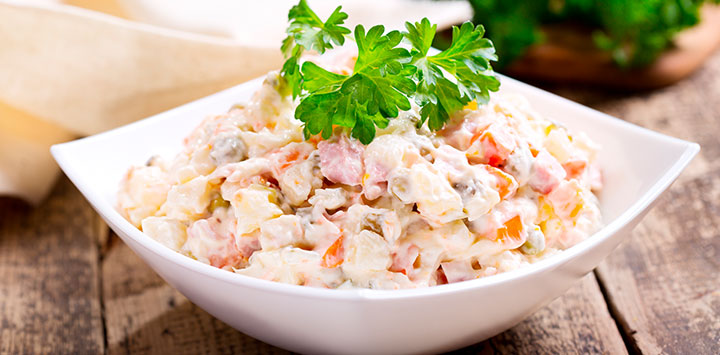
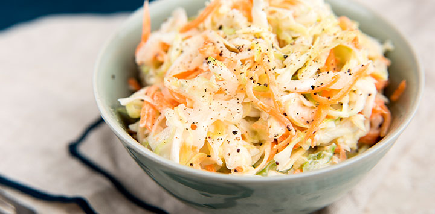

| Nombre del Platillo | Tiempo de Elaboracion | Porcion | Ingredientes | Procedimiento | Imagen |
| |
ENSALADA MIXTA | 30 MINUTOS | 2 PERSONAS | TOMATE LECHUGA CEBOLLA QUESO JAMON | SE CORTA LA LECHUGA SE CORTA EL TOMATE SE CORTA LA CEBOLLA SE PONE EN UN RECIPIENTE Y SE MEZCLA |  |
| |
ENSALADA DE PASTA | 30 MINUTOS | 2 PERSONAS | TOMATE LECHUGA CEBOLLA QUESO JAMON | SE CORTA LA LECHUGA SE CORTA EL TOMATE SE CORTA LA CEBOLLA SE PONE EN UN RECIPIENTE Y SE MEZCLA |  |
| |
ENSALADA CREPECE | 30 MINUTOS | 2 PERSONAS | TOMATE LECHUGA CEBOLLA QUESO JAMON | SE CORTA LA LECHUGA SE CORTA EL TOMATE SE CORTA LA CEBOLLA SE PONE EN UN RECIPIENTE Y SE MEZCLA |  |
| |
ENSALADA WLADORF | 30 MINUTOS | 2 PERSONAS | TOMATE LECHUGA CEBOLLA QUESO JAMON | SE CORTA LA LECHUGA SE CORTA EL TOMATE SE CORTA LA CEBOLLA SE PONE EN UN RECIPIENTE Y SE MEZCLA |  |
| |
ENSALADA OLIVIER | 30 MINUTOS | 2 PERSONAS | TOMATE LECHUGA CEBOLLA QUESO JAMON | SE CORTA LA LECHUGA SE CORTA EL TOMATE SE CORTA LA CEBOLLA SE PONE EN UN RECIPIENTE Y SE MEZCLA |  |
| |
ENSALADA COLESLAW | 30 MINUTOS | 2 PERSONAS | TOMATE LECHUGA CEBOLLA QUESO JAMON | SE CORTA LA LECHUGA SE CORTA EL TOMATE SE CORTA LA CEBOLLA SE PONE EN UN RECIPIENTE Y SE MEZCLA |  |